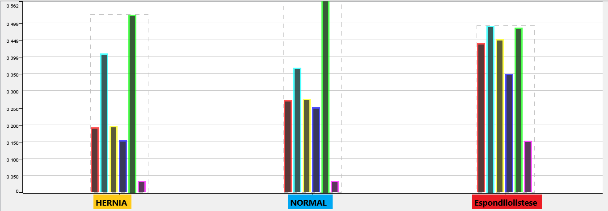

Dados Para Cálculo
Incidência pélvica
Inclinação pélvica
Ângulo de lordose lombar
Inclinação sacral
Raio pélvico
Grau de espondilolistese
Gerar Resultado
Resultado
...
Gráficos
GRAFICO 1
GRAFICO 2
GRAFICO 3

Incidência pélvica: Ângulo formado pela perpendicular ao platô superior de S1 e a linha que conecta o ponto médio deste com o centro das cabeças femorais(Angulo do final do osso do "coquis" e cabeça dos femorais)
Inclinação pélvica: Quando o osso sacral parece estar mais alto do que "normal" ou a parte inferior das costas parece arqueada(Então pegasse essa medida).
Ângulo de lordose lombar:A lordose lombar se refere à curvatura anterior da coluna lombar, localizada no seguimento inferior do tronco(Angulo dessa curvatura).
Inclinação sacral: A inclinação sacral corresponde ao ângulo formado entre o platô vertebral superior de S1 e a linha horizontal(parte de cima do "osso do coquis" com a linha do horizonte).
Raio pélvico: É a distância do eixo do quadril ao canto póstero-superior da placa terminal S1("coquis").
A espondilolistese é classificada em cinco graus, de acordo com a porcentagem de escorregamento da vértebra sobre a vértebra abaixo.